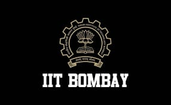
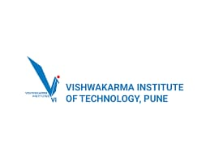

Indian Institute of Technology Bombay (IIT Bombay)Location: Powai, Mumbai Established: 1958 IIT Bombay is a premier engineering institution offering undergraduate to doctoral programs in science and technology. |
Institute of Chemical Technology (ICT)Location: Matunga, Mumbai Established: 1933 ICT is known for excellence in chemical engineering, pharmacy, and biotechnology education and research. |

College of Engineering Pune (COEP)Location: Pune Established: 1854 COEP is one of the oldest engineering colleges in Asia, offering programs in various branches of engineering and applied sciences. |
Veermata Jijabai Technological Institute (VJTI)Location: Matunga, Mumbai Established: 1887 VJTI offers undergraduate and postgraduate programs in engineering and is known for its academic excellence. |
Defence Institute of Advanced Technology (DIAT)Location: Girinagar, Pune Established: 1952 DIAT specializes in defense technologies and sciences under the Department of Defence Research and Development. |

Vishwakarma Institute of Technology (VIT)Location: Pune Established: 1983 VIT is an autonomous engineering institute affiliated with Savitribai Phule Pune University, offering UG and PG degrees. |